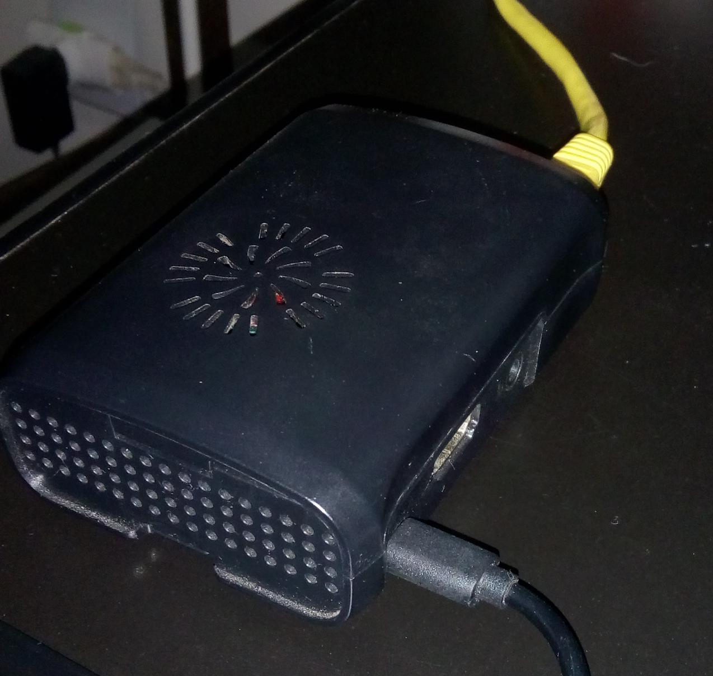
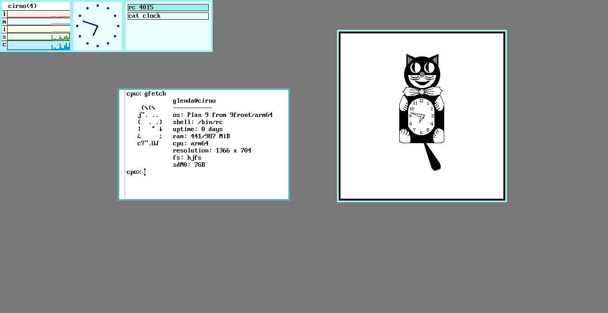
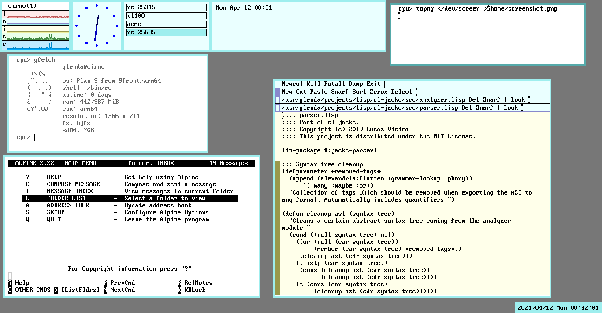
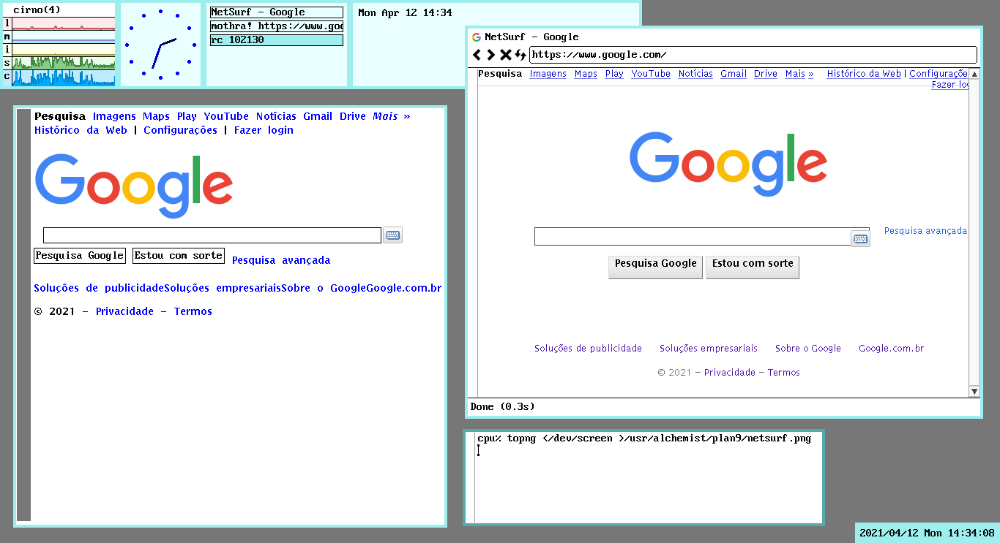

Table of Contents
Hello, everyone. Today I wanted to upgrade my Raspberry Pi to the latest release of 9front, however the source code was not compiling on arm64, so I decided to reinstall 9front on my Raspberry Pi.
The following steps were built atop some quick notes I did so I never forget this stuff. There's a small chance I'll update this post with more stuff.
Last updated at
Preparation

Figure 1: My local Raspberry Pi setup.
Here's what you'll need:
- A Raspberry Pi (I used a Pi 3 Model B+ for this example);
- An SD Card which can store 9front's files (up to 2GB will do);
- A spare keyboard and a spare 3-button mouse (most wheel mouses are compatible);
- A 9front Raspberry Pi image (use one compatible with your Pi);
- An HDMI cable (and some TV or monitor to connect your RPi to);
- An Ethernet cable to plug the Pi to your router (or whatever device you use);
- A computer running a Linux distribution with the programs:
arp-scan, for device discovery on local network;- 9front's spin of the
drawtermprogram, which can be found on its website.
- Drawterm, specifically one compatible with changes made to 9front.
Downloading the Linux programs and 9front Pi image is a trivial task, so I'll let you figure this out.
You'll also want to write the SD Card image to your SD Card. Extract
it from the .img.gz file, and write the .img file to your SD Card
using dd. I'll let you figure this one out to.
Plug the SD Card to the card slot of your Raspberry Pi, and plug the ethernet cable to your Pi and to your router (or to whatever network device you have at your disposal). The important thing here is to ensure that the Raspberry Pi and your Linux computer have access to the same network.
Furthermore, plug both the mouse, the keyboard and the HDMI cable to your Raspberry Pi. This will be necessary only on the initial configuration, but if you want to update 9front's kernel anytime, you'll need to plug these before booting again – the reasons will be described later.
A quick note on Drawterm
I never really got Drawterm to work with audio on Linux with its default build
configuration, so I recommend using the sndio driver. If you manage to build
it, simply run sndiod -dd on a console window and any sound playback should
work with Drawterm. Notice though that it may affect playback on other Linux
programs, as it blocks audio channels for playback.
Automatic boot
Let's start with the basics. Suppose you have written your 9front image to an SD Card, plugged it in you Raspberry Pi, and plugged the power in. You also have a mouse and a keyboard connected, and the RPI is plugged to your TV or monitor.
Once the RPI boots, you'll be greeted with the Plan 9 Console, which may be graphical or not. In any case, you'll need to press Return a couple times to enter the bootargs, username, etc. Pressing Return will select the default option for everything.
The first step is removing these annoying prompts. Since the bootargs
and the user are always the same, we can configure the plan9.ini file
so that they are not asked.
At this point, you'll probably be at the rio window manager. Remember
that, regardless of your keyboard, 9front will use the US keyboard
layout.
Open up a terminal, mount the DOS partition of the RPI and go to its mount directory by using these commands:
9fs pidos
cd /n/pidos
On the RPI image of 9front, there is not plan9.ini file; it is
actually generated on boot by taking the commands written on the file
cmdline.txt.
You may then open the file cmdline.txt with sam or acme, or even edit
it using ed.
Ensure that the following is written on the file:
console=0 user=glenda nobootprompt=local!/dev/sdM0/fs
console is a parameter which is already expected to be there, and user
is straightforward. nobootprompt suppresses the query for the value of
bootargs when booting 9front. This is because, if we used bootargs
instead, we'd only be setting up bootargs's default value, so the boot
would hang expecting a Return key press anyway.
Notice that the user glenda is default to most Plan 9 distributions,
so do not change that, unless you know what you're doing.
Make sure that there is a line break at the end of the file, and save it.
You can now reboot the RPi by using the reboot command on any command
line to test it. Make sure you keep keyboard, mouse and video still
attached.
Configuring remote access
Next, we'll configure 9front so that, after booting, it will automatically allow other machines to connect to it remotely.
Specifically, what we'll be doing here is starting a CPU Server, although the RPi will still work as other kinds of servers as well (for example, it will still provide local storage).
Open the file $home/lib/profile by using sam, acme or ed.
There is a switch structure comparing the value of a $service
environment variable, which relates to the way the user has connected
to the current session. In short, you're currently on the terminal
case; but we're interested on the cpu case, which is the remote
connection of a computer to a CPU Server.
Before this switch structure, add the following lines. You may change
them according to your needs, but keep the user glenda.
auth/factotum -g 'key proto=p9sk1 dom=plan9 user=glenda !password=glenda' aux/listen1 -t tcp!*!rcpu /rc/bin/service/tcp17019 -R & ip/ipconfig
A few command line programs are used here, so we'll take some time to understand what exactly are they doing – for further info, check out their manpages (seriously, please do. Using Plan 9 means reading manpages).
factotum talks to the Auth Servers which are running. The specific
command above registers a password to a specific user glenda which may
be trying to remotely connect to a cpu server. The password may be
anything you like, and there are ways to encrypt this information, but
we won't be doing that.
listen1 is a simplified way to open up the current cpu server to a
remote connection… and let's leave the explanation at that.
ipconfig sets up an IP address for your Raspberry Pi on your current
network (you may notice that tools such as ip/ping won't work until
this command is run!).
These commands are positioned in such a way that, no matter when or
how a user starts a session in 9front, they will always be
run. And at this point, even if the RPi were powered on without
keyboard, mouse or video output, it would still log in to the user
glenda, therefore running this script.
Luckly, running these commands several times will not affect the behaviour of our system.
The 9front instance running on RPi may not be remotely accessed using
drawterm from another operating system, or by using /bin/ncpu. We
won't be covering the latter one in this post, though.
You can now temporarily turn off your RPi. Run fshalt from any
console, await the "done halting" message, and unplug it from power;
remove all cables, except the ethernet cable to your network device.
You can now turn the RPi on again. And this time, nothing but the power chord and the Ethernet cable are needed.
Connecting remotely
Now we'll connect remotely to our RPi which runs 9front.
Note that remote access makes you unable to access the DOS partition
(pidos), so if you want to edit cmdline.txt again or update your
kernel, you'll need to reboot your RPi with video output and
keyboard/mouse input.
On Linux, first find out what is the IP of the Raspberry Pi on your network.
sudo arp-scan --local
This will ask you for your password, and will show you some output:
Interface: xxxx, type: xxxx, MAC: xx:xx:xx:xx:xx:xx, IPv4: 192.168.2.x Starting arp-scan 1.9.7 with 256 hosts (https://github.com/royhills/arp-scan) ... 192.168.2.7 xx:xx:xx:xx:xx:xx Raspberry Pi Foundation ... 4 packets received by filter, 0 packets dropped by kernel Ending arp-scan 1.9.7: 256 hosts scanned in 1.889 seconds (135.52 hosts/sec). 4 responded
In my case, my rpi has an IP 192.168.2.7 on my local network.
Let's use drawterm to connect. We just have to run the following
command; the -a argument should point to a machine running the auth
server, and -h points to the machine running the CPU (host) server. In
our case, they're on the same machine. -u just defines a user, which
is "glenda".
drawterm -a 192.168.2.7 -h 192.168.2.7 -u glenda
This will open a Drawterm window containing the following prompt:
glenda@plan9 p9sk1 password:
Type the password previously defined with factotum (glenda in this
example), then press Return. Note that it will not echo. You may see
an error related to ipconfig (since it is being run for a second time
– first time was on boot). It will then give you a prompt:
cpu%
From there, type rio and press enter to get a graphical interface.
You'll notice that there is nothing onscreen, since we haven't started
rio by telling it to run some script (normally riostart, on a local
terminal). Let's change that.
Logging in remotely to a graphical session
The riostart script assumes that you are booting 9front by plugging an
HDMI cable, a keyboard and a mouse to it, so we need an adapted
version of it for a drawterm session.
Create a console window and cd to $home/bin/rc. You'll notice that
the bin folder on $home has two subfolders, one called rc and another
with the name of your architecture, probably arm or arm64.
rc is where all executable rc scripts go.
Let's make a new one.
touch riostart-remote
Then open it using sam or acme, and add a shebang #!/bin/rc at its
beginning.
From now on your config is related to your taste. I like to have some
windows opened on boot with some information, such as stats, clock and
winwatch.
Here is my config as an example. You may even copy it from your Linux
system and paste it to your file (which is better done through Acme),
although faces will most likely fail since we haven't configured the
Plumber yet, and bar is an extra util which will be discussed at the
end.
#!/bin/rc window 0,0,161,117 stats -lmisc window 161,0,278,117 clock window 278,0,478,117 winwatch -e '^(winwatch|stats|clock|faces)' window 478,0,877,117 faces -i window -scroll bar
Make sure that this file ends with a line break.
Now, make it executable.
chmod +x riostart-remote
Let's head back and edit $home/lib/profile. Scroll to the case of the
switch called cpu – that's the case for a remote connection to our
cpu server.
After the definition of the function fn cpu%, let's add a few lines
(make sure to add indentation):
if(! webcookies >[2]/dev/null) webcookies -f /tmp/webcookies webfs plumber rio -i riostart-remote
Make sure that these are the last lines of that case.
webcookies starts the manager for HTTP cookies. If it fails to run,
then it tries running again, using the file /tmp/webcookies as default
cookies file.
webfs binds a web file system interface so that we may browse the web
using abaco or mothra.
plumber binds an interprocess messaging system to the file system so
that we may do interesting stuff, e.g. open a PDF from command prompt
by plumbing its name. We'll have a moment to set it up properly at the
end.
The last line starts rio, and instructs it to run riostart-remote on
startup.
You can now close drawterm after saving the file, and then login again through the command above. It will not cause instability on 9front; drawterm is basically just a terminal, so it is isolated from the rest of the system.
Upon logging in again through drawterm, you'll be automatically
greeted by rio.
Binding the local filesystem
One interesting way to use the 9fs protocol indirectly is to have your
local filesystem avaiable to access on your drawterm session.
This means that your Linux files can be accessed from your drawterm session, in an isolated manner, so that the files are only visible on said drawterm session – not for another session, not for another user.
This is done automatically once you log into your 9front box, and the
root of your filesystem is then mounted to /mnt/term. So all you need
to do is create a "link" to your folder somewhere.
On Linux, we'd think of symlinks. Here, we just need to bind a folder to another.
Edit $home/lib/profile again. Right before starting webfs, add the
following:
bind -a /mnt/term/home /usr >[2]/dev/null
This will bind all files in /mnt/term/home/ to /usr. So all files in
/usr (e.g. your 9front home folder /usr/glenda) will be kept, plus all
files in /mnt/term/home/ will also be seen under /usr.
So for example, if your user folder on Linux is at /home/user, it will
now be available on 9front (through a drawterm session only) at
/usr/user.
Notice that, if you wish to create new files under /usr, you'll have
to use -ac instead of -a on the bind command. For more info, see
bind(1).
This is particularly useful for transferring files between Linux and
9front, even allowing for direct usage of remote storage through the
9fs protocol.
You may want to experiment with binding other directories.

Figure 2: An in-progress screenshot of the configuration. This screenshot was taken from Drawterm.
Setting up the Plumber
The plumber(4) is a very important interprocess message protocol,
which is initialized by the command plumber when we log onto a
session.
Right now, the plumber will not work; however, with minimal setup,
we'll be able to allow it to perform simple redirection defaults, such
as opening image and PDF files with page, or text files with acme or
sam, or opening URLs in mothra.
Create a file $home/lib/plumbing. Then, using Acme or Sam, edit it so
it looks like the following:
editor = sam include basic
This is all we need, though you can add more rules prior to these
lines. For more info on the syntax to plumbing rules, see plumb(6).
Here's my own plumbfile. Here, I just set Acme as my default text
editor, and made clear that mothra is my default web browser
(specifically, I state that I want to open webpages using mothra's
alt display mode). These variables are then used on the basic
plumbing rules, which we've included at the end of the file.
editor = acme browser = 'mothra -a' include basic
Now you can cd to folders containing images/pdfs and, after listing
the files, mark their name with the mouse, middle-click and select
'plumb' to open them in a new window, with their proper
application. With web links, you just have to mark them anywhere and
plumb them by the same means.
This will also allow you to open webpages by plumbing links, and will also affect the opening of emails once you've configured it.
You can update manually the plumbing rules by using the following command:
cp $home/lib/plumbing /mnt/plumb/rules
Or you may log in to a new session to see your changes take effect.
Extra stuff

Figure 3: Another screenshot of Plan 9, this time taken directly within it. The screenshot was taken from rio and saved directly to my Linux hard drive
Setting up Git
Git for Plan 9 can be set up with easy steps, as it is stated on their repository. The following just repeats the instructions on the linked repo.
NOTE: As of now (2022-11-18), Git for Plan 9 is contained by default on 9front. You shouldn't need to perform the installation steps anymore.
Installation
First we obtain a bootstrap copy.
cd /tmp hget https://orib.dev/git/git9/HEAD/snap.tar.gz | tar xvz cd git9 mk all mk install
Now we'll get a copy which can have new updates pull'ed every once in
a while. I did that by creating a $home/src directory, then performing
the following operations:
cd $home/src git/clone gits://orib.dev/git9 cd git9 mk all mk install
Setting up username
The next step is setting up a username and an email.
Create a file $home/lib/git, which can be done with touch. Then use
Acme or Sam to edit it and add stuff like the following:
[user] name=Your Name email=youremail@example.com
Make sure you add the newline at the end of the file.
Setting up an SSH key for Git
You might need to create an SSH key to authorize your 9front box on websites such as SourceHut or GitHub, which work best with SSH interaction.
Start by creating an SSH private key, that won't be shared. Notice that this step may take a while:
auth/rsagen -t 'service=ssh' >$home/lib/sshkey
Now, create an SSH public key that will be shared with your Git Forge:
auth/rsa2ssh $home/lib/sshkey >$home/lib/sshkey.pub
Finally, just send the private key to factotum(4) so you may now use it.
You may also add this line to your profile so that it is always available on
login.
cat $home/lib/sshkey >/mnt/factotum/ctl
The reference to these steps may be found here.
Now you can look at the manpages git(1) and gitfs(4) to get started.
Setup automatic time synchronization
If you're someone like me who is not currently in January 1st 1970, you may want to set up Plan 9 to fetch the current date from the internet. Luckly, that's an easy thing to do.
This is something that is set up on 9front's installation on other platforms, but since our RPi image comes with 9front preinstalled, we need to manually setup our timezone.
Looking at the directory /adm/timezone, you'll see a list of many
timezones. All you need to do is copy your timezone so that it
overwrites local. Here's how I did with mine:
cp /adm/timezone/Brazil_East /adm/timezone/local
Let's discuss a manual update of your RPi time. You can just run something like this:
aux/timesync -n pool.ntp.org
Or, if you're in Brazil just like me:
aux/timesync -n pool.ntp.br
Now, open again your $home/lib/profile file. Right after setting up
ipconfig, add the previous command.
9front is supposed to run this command on boot through /rc/bin/cpurc
or /rc/bin/termrc, but unfortunately, none of these will work prior to
having an IP address.
However, you may want to edit these files to include the following somewhere – just make sure that the files end with a newline, after editing:
TIMESYNCARGS=(-n pool.ntp.org)
(Or use the brazillian NTP server instead).
Reboot to see your changes take effect.
This info was somewhat copied from here, and I recommend looking at the 9p.io wiki as well.
Bottom bar
There's an interesting widget I stumbled across, which shows some information – the current date, specially, which I miss the most.
This widget is part of a suite of experiments with rio called riow,
which enables keyboard window management on rio – but I haven't tried
using that yet.
If you already installed git9, you can clone and build bar:
cd $home/src git/clone https://git.sr.ht/~ft/bar cd bar mk install
You'll get a binary /bin/bar on your system. Now edit your
$home/bin/rc/riostart-remote file, and add the following line at the
end of it (remember to leave a dangling newline afterwards!):
window bar
You don't need to specify the window size or position, bar will take
care of that.
Lua
Lua 5.4 works fine on Plan 9, and there are some libraries that enhance the interoperability of Lua with Plan 9.
Go to $home/src and clone the lu9 repository:
cd $home/src git/clone https://git.sr.ht/~kvik/lu9
Now, we need to fetch a few dependencies, and then build and install them:
cd $home/src/lu9 mk pull mk install
To use lu9, you can either run a Lua file with lu9 file.lua or run an
interactive shell through lu9 -i.
Scheme
There is an awesome implementation of Scheme by Nils M. Holm which not only runs on Plan 9, but was also built for it.
I also recommend taking a look at the author's book, which basically teaches you to build it from scratch.
There is a repository on GitHub which runs fine on any Plan 9 architecture, plus can be installed on the system.
cd $home/src git/clone https://github.com/bakul/s9fes cd s9fes mk mk inst
To use Scheme 9 from Empty Space, just run the program s9.
cpu% s9 Scheme 9 from Empty Space (Reimagined) > (+ 1 2 3) 6 > ,l draw-tree ; loading from /usr/glenda/lib/s9fes/draw-tree.scm > (draw-tree '(a b c)) [o|o]---[o|o]---[o|/] | | | a b c >
Vim
Before anything, you seriously should be using Acme or Sam. But if you still insist on using Vim, there is a way to have Vim 7.1 working on Plan 9.
Run the following:
cd /tmp hget http://vmsplice.net/vim71src.tgz | gunzip -c | tar x cd vim71/src mk -f Make_plan9.mk install
After installation, you'll have xxd and vim installed on your
system. xxd is useful for generating hexdumps.
Netsurf
Mothra is a browser that works for the simplest tasks, but you may want to use a browser which renders HTML properly.
You'll want to compile Netsurf from source. This will take a while, and I recommend you to use whatever external storage you can to do this.

Figure 4: Comparison between Google.com rendering on both Mothra (left) and NetSurf (right).
Personally, since I'm connecting to my RPi from a Linux Drawterm session, I take advantage of that (by using the bindings previously described) so that every built file is stored on Linux instead of the RPi. After building, I then installed on the Plan 9 system itself.
First of all, create a folder where you can clone Netsurf. My projects
folder was previously bound using bind -ac to $home/projects.
mkdir $home/projects bind -ac /mnt/term/home/alchemist/projects $home/projects mkdir $home/projects/plan9 cd $home/projects/plan9
Now, clone the repository which has the proper mkfile for building
Netsurf's port. You'll need Git9 for that; refer to the previous Git
configuration section.
git/clone https://github.com/netsurf-plan9/nsport
cd nsport
git/clone https://github.com/netsurf-plan9/netsurf
After that, fetch other libraries which are crucial for building
netsurf. You can use the fetch script on nsport's repository root.
Note that fetching all library repositories will take a while.
cd nsport
fetch clone https
Every once in a while, you may want to update the Netsurf source code
so you can get new patches and improvements. You can cd to this same
repo and run, before building:
fetch pull
Now all we have to do is build Netsurf and install it to our system.
Needless to say, this might take long, specially considering the bottleneck related to file transfers between 9front's filesystem cache and Linux's filesystem.
mk mk install
You may also want to edit your $home/lib/plumbing to use Netsurf as
your default plumbing action for web links. Just replace your browser
with netsurf.